Префектура Вакаяма · Хидакагава · храмы и легенды
Додзёдзи: храм, где колокол стал легендой, а легенда стала театром
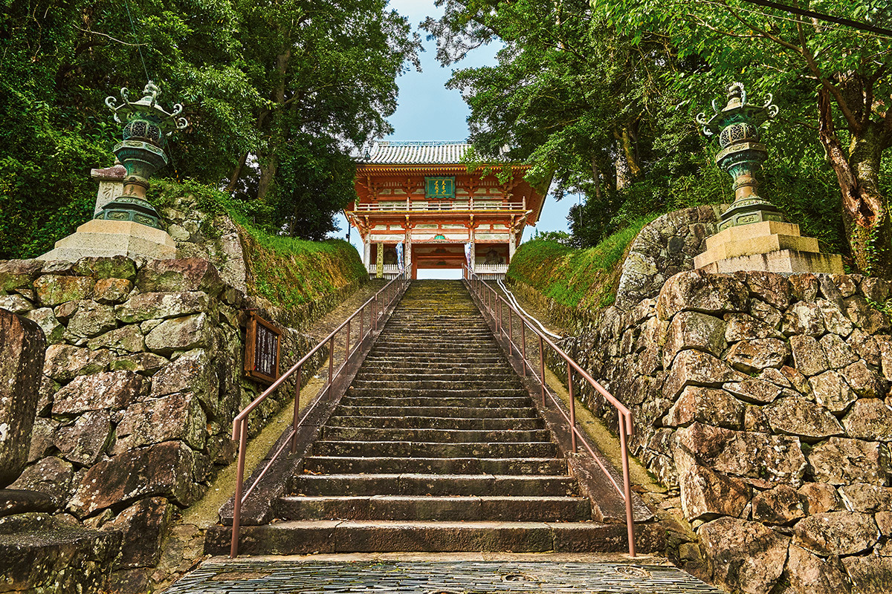
Додзёдзи называют главным старинным храмом префектуры Вакаяма, а для японского театра это место паломничества. Отсюда пошла история о девушке, которая превратилась в змею, и из неё выросли больше двадцати пьес но, кабуки и дзёрури.
Храм
Тринадцать веков с тысячерукой Каннон
Храм Додзёдзи стоит в городке Хидакагава в префектуре Вакаяма. По преданию, его основал в 701 году император Момму по просьбе Мияко Фудзивары, матери будущего императора Сёму. Главная святыня храма это тысячерукая бодхисаттва Каннон, и ей здесь поклоняются почти 1300 лет без перерыва. В храме хранятся три её статуи.
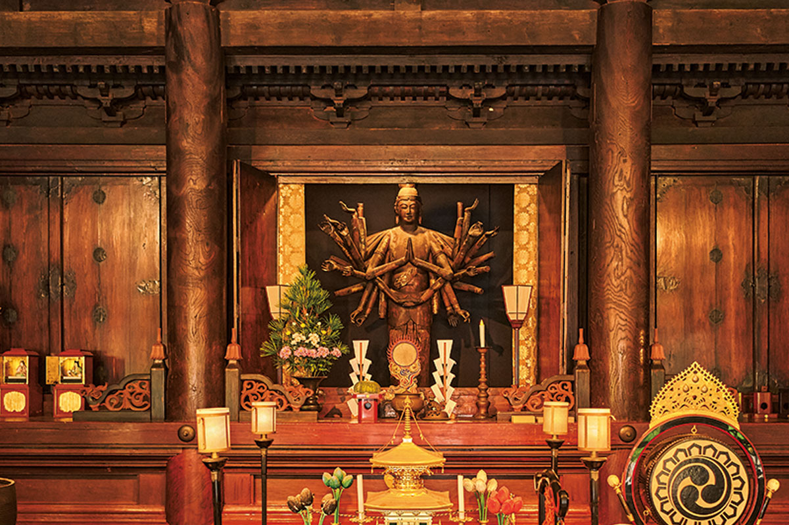
Но у Додзёдзи есть и вторая слава, не меньше первой. Именно здесь разворачивается история, которая дала начало целому жанру японского театра: пьесам «додзёдзи-моно», то есть «пьесам о Додзёдзи».
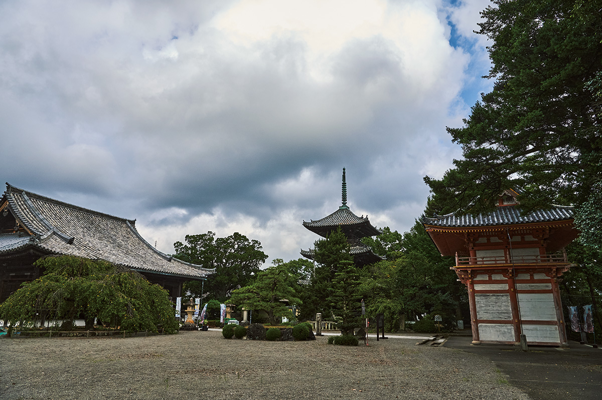
Легенда
Антин и Киёхимэ
Всё началось, как гласит предание, в 928 году. Молодой монах Антин шёл с северо-востока Японии на паломничество в Кумано. В деревне Манаго, на землях нынешнего города Танабэ, в него влюбилась девушка по имени Киёхимэ. Узнав, что её обманули, она гналась за ним больше 60 километров и у самого Додзёдзи, превратившись в огромную змею, сожгла монаха в храмовом колоколе, где он прятался.
Эту историю записали в «Кондзяку моногатари», большом сборнике старинных рассказов, а потом и во многих других сборниках. Из неё выросли пьесы но, кабуки, кукольного театра дзёрури. Сегодня в репертуаре больше двадцати таких пьес, и за год их играют больше ста раз.
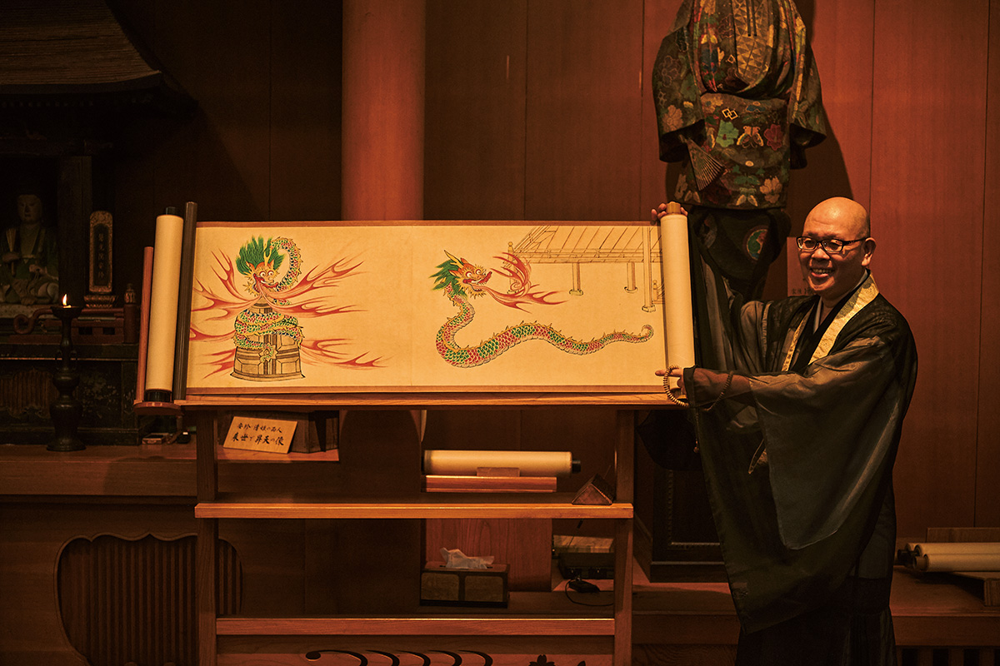
Если знать сюжет заранее, в храме будет интереснее. Вот как он выглядит на свитке.
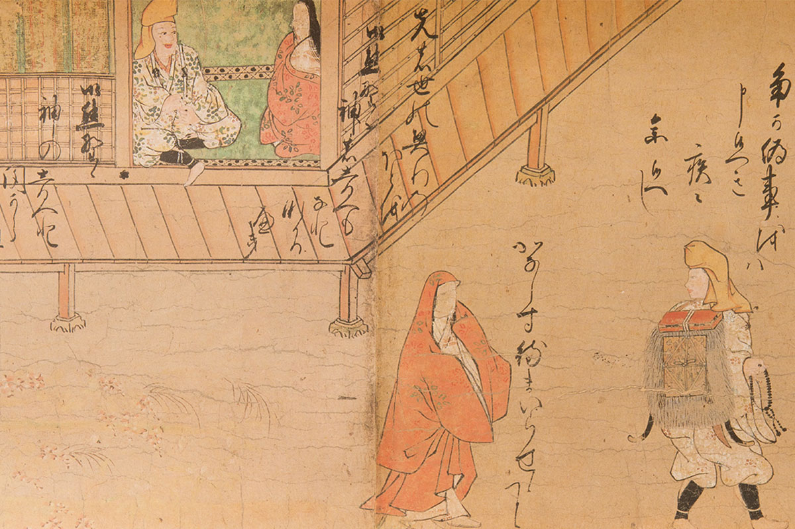
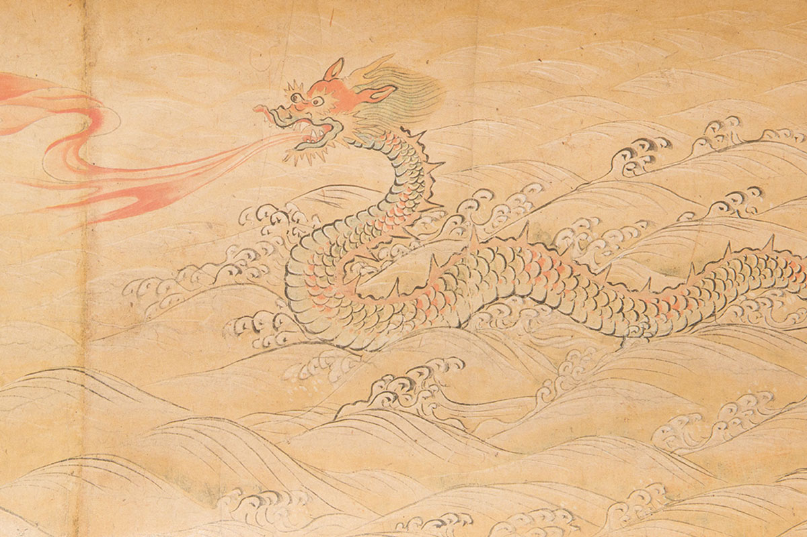
Перебравшись через реку, Антин просит помощи в Додзёдзи. Монахи сначала не верят ему, но всё же прячут: монах забирается под колокол, колокол убирают в звонницу и запирают дверь.
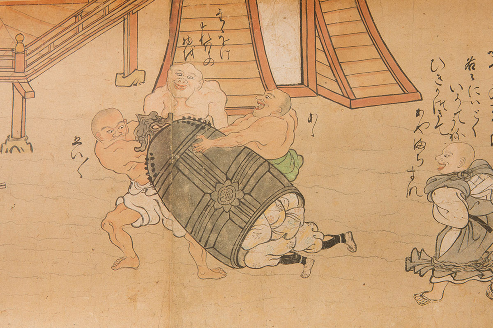
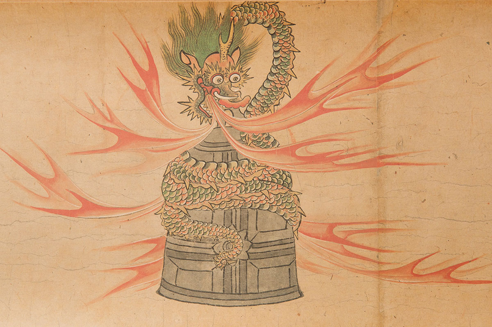
Театр
Колокол, который вернул храму историю
Когда же история превратилась в театр? Пьеса но «Додзёдзи» появилась около 1500 года, и путь к ней проложил человек, о котором мало кто знает за пределами Вакаямы.
В 1357 году Мандзюмару Хэми восстановил главный зал Додзёдзи, а ещё подарил храму скрытую статую тысячерукой Каннон и второй колокол. После истории с Антином и Киёхимэ колокола в храме не было около 400 лет, и вернул его именно Хэми. Позже на сюжет об освящении этого колокола написали пьесу но «Додзёдзи»: во время церемонии появляется призрак Киёхимэ. Её и считают первой из «пьес о Додзёдзи».
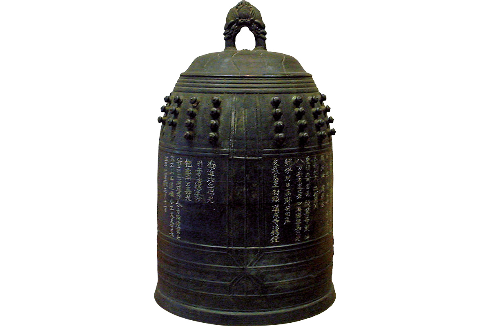
Хидэёси Тоётоми (1537–1598), полководец, объединивший Японию в конце XVI века, увёз колокол из этих мест. С тех пор он лишь изредка возвращается в Додзёдзи: осенью 2021 года, к 700-летию Мандзюмару Хэми, колокол привезли сюда второй раз за историю и впервые за 17 лет.
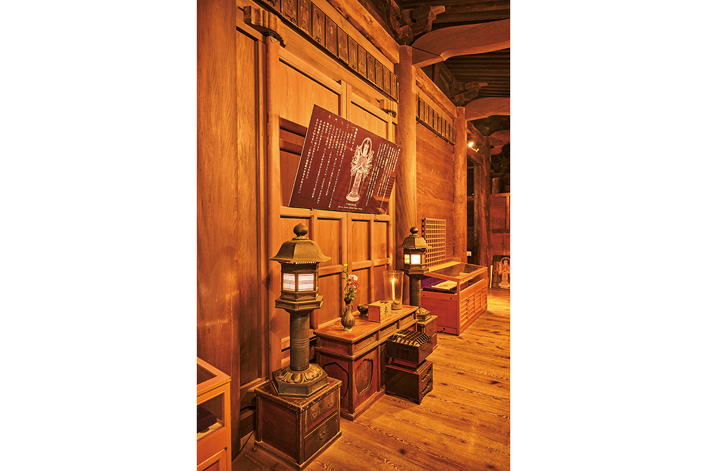
К тому же юбилею в 2021 году открыли и скрытую Каннон: распахнули северные двери главного зала, и статую можно было увидеть вблизи.
«Скрытая статуя похожа на ушедших родителей: оберегает нас оттуда, где её не видно. Приходите сюда с близкими и молитесь о том, чтобы и в следующий раз прийти вместе»
настоятель Додзёдзи
Храм Додзёдзи
- Адрес
- префектура Вакаяма, уезд Хидака, Хидакагава, Канэмаки, 1738
- Телефон
- +81 738-22-0543
- Часы работы
- 9:00–17:00, без выходных
- Цены / Вход
- 600 иен, школьники младших классов 300 иен, дошкольники бесплатно; вход на территорию бесплатный
- Как добраться
- от станции Додзёдзи линии JR около 9 минут пешком; на машине около 11 минут от съездов Кавабэ и Гобо скоростной дороги Ханва
По следам
Где ещё живёт Киёхимэ
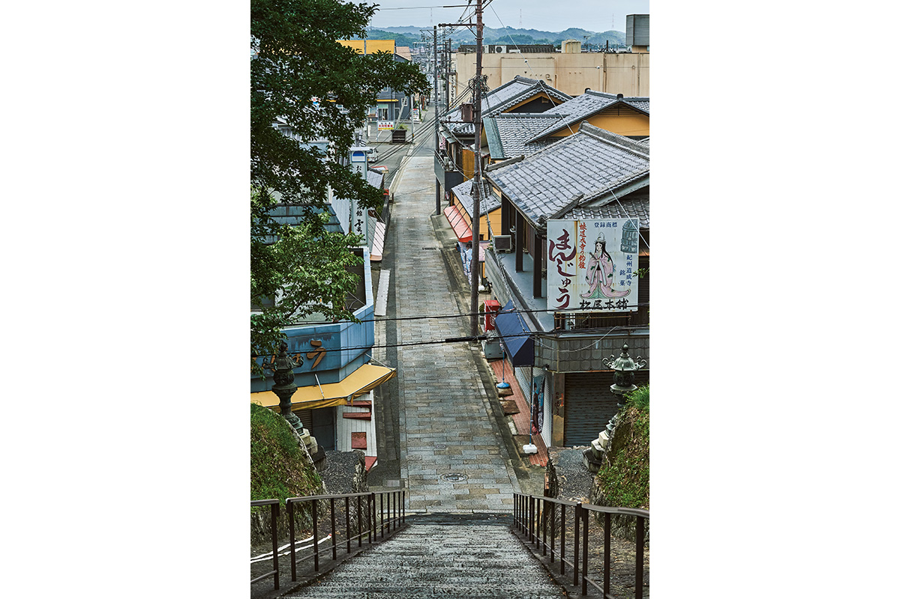
Легенду об Антине и Киёхимэ рассказывают не только в Додзёдзи. По всей округе, от родной деревни Киёхимэ в горах до берегов реки Хидака, стоят камни, могилы и храмы, связанные с её погоней.
Итигандзи: семейный храм Киёхимэ
Храм стоит недалеко от родной деревни Киёхимэ, в горном районе Накахэти города Танабэ, и считается семейным храмом её рода. Здесь хранится свиток «Киёхимэ юйсё эмаки», созданный предположительно в середине эпохи Эдо. Сам свиток не показывают, но в зале бодхисаттвы Дзидзо висят панели с его изображениями, перенесёнными с гравюры на стекле: по ним можно узнать, как легенду рассказывают в этих местах.
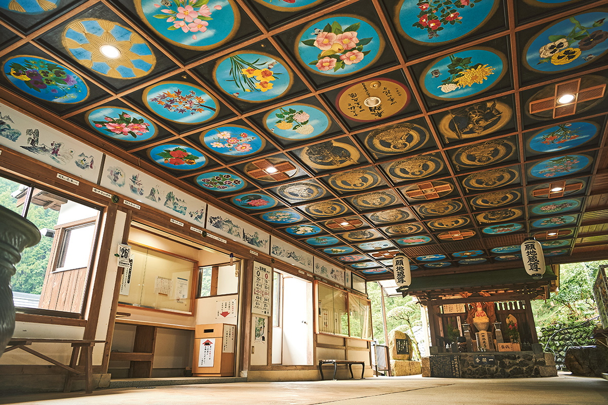
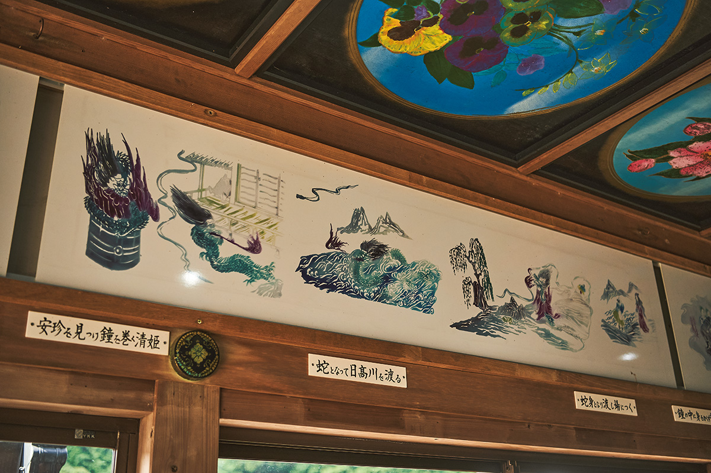
В тихом дворе храма можно увидеть и новые изображения Киёхимэ: рисунки, которые принесли в дар храму уже наши современники.
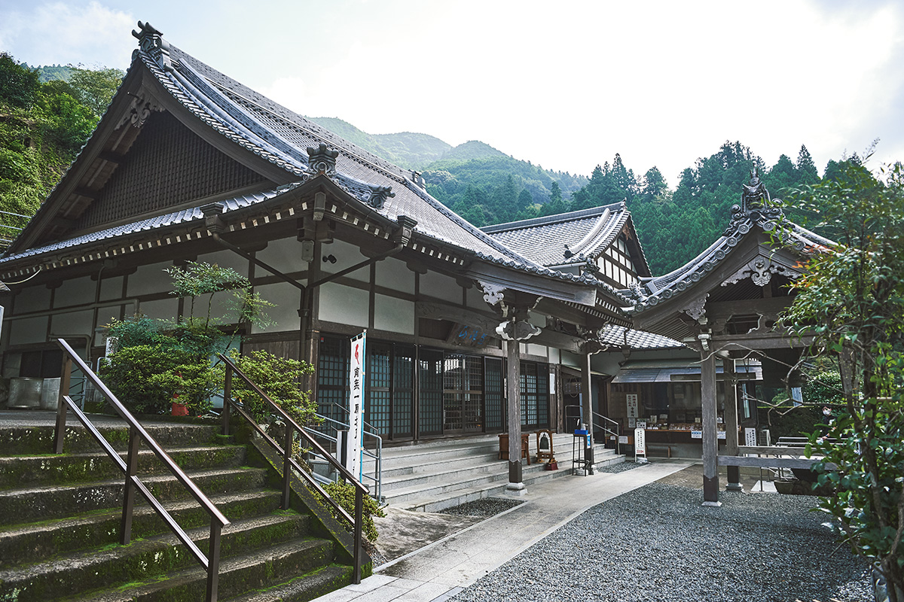
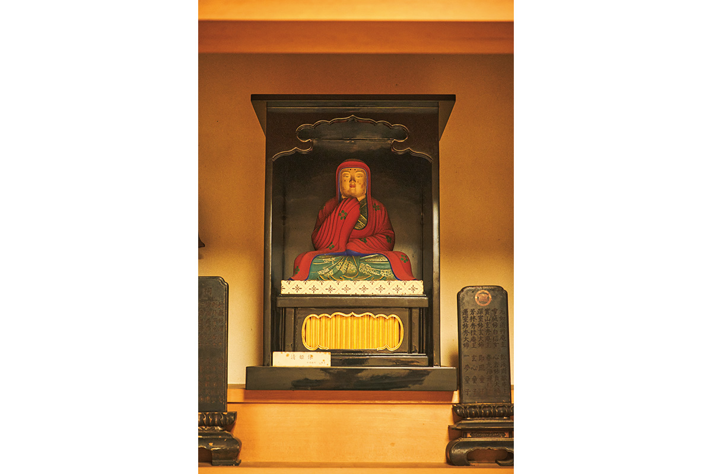
Храм Итигандзи
- Адрес
- префектура Вакаяма, Танабэ, Накахэти, Нисидани, 575
- Телефон
- +81 739-64-1045
- Часы работы
- территория открыта всегда, контора храма примерно с 8:00 до 17:00
- Цены / Вход
- бесплатно
- Как добраться
- на машине около 45 минут от съезда Нанки-Танабэ скоростной дороги Ханва; от станции Кии-Танабэ линии JR на автобусе линии Кумано-Хонгу или экспрессе «Кумано-кодо» до остановки «Киёхимэ», затем около 30 минут пешком
Могила Киёхимэ
На берегу реки Тонда в Манаго, родной деревне Киёхимэ, стоит её могила. Рядом небольшой зал в её честь и камень со стихами, посвящёнными её памяти. Здесь рассказывают свою версию конца истории: Киёхимэ бросилась в реку Тонда.
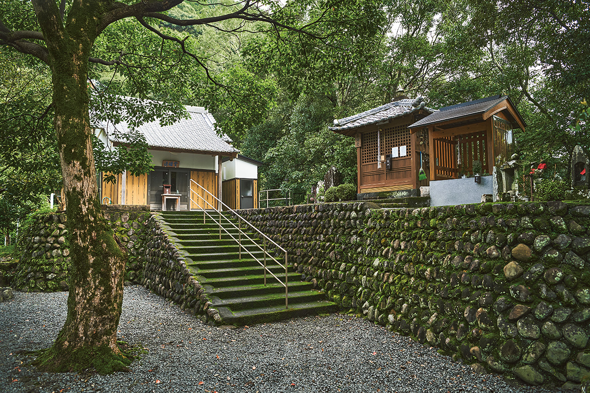
Могила Киёхимэ
- Адрес
- префектура Вакаяма, Танабэ, Накахэти, Манаго
- Цены / Вход
- свободное посещение
- Как добраться
- на машине около 40 минут от съезда Нанки-Танабэ скоростной дороги Ханва; от станции Кии-Танабэ линии JR на автобусе линии Кумано-Хонгу или экспрессе «Кумано-кодо» до остановки «Киёхимэ», затем около минуты пешком
Колодец Киёхимэ в храме Рюсэндзи
Храм Рюсэндзи в Танабэ построили там, где, по преданию, разбился дракон, который во время великой засухи конца VIII века принёс дождь. Сила дракона будто бы и открыла здесь источник. Говорят, Киёхимэ пила из этого колодца и набиралась сил для погони.
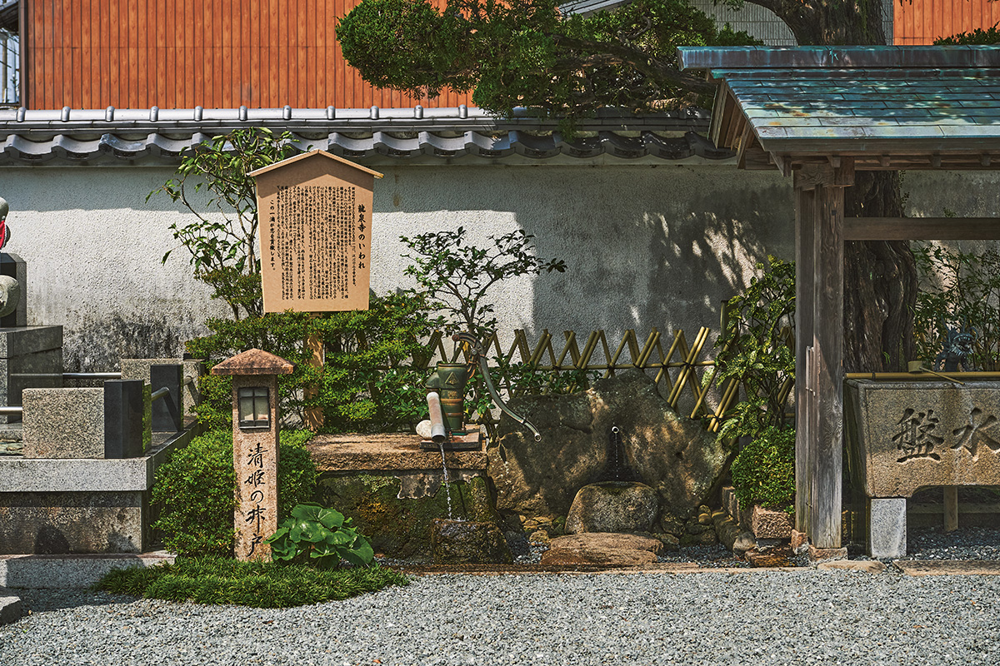
Колодец Киёхимэ, храм Рюсэндзи
- Адрес
- префектура Вакаяма, Танабэ, Фуруо, 25-21
- Телефон
- +81 739-22-1883
- Часы работы
- с 6:00 до заката
- Цены / Вход
- бесплатно
- Как добраться
- на машине около 7 минут от съезда Нанки-Танабэ скоростной дороги Ханва; от станции Кии-Танабэ линии JR на автобусе линии Минабэ до остановки «Эгава-охаси», затем около минуты пешком
Камень, на котором сидела Киёхимэ
Убегая, Антин произнёс заклинание, у Киёхимэ потемнело в глазах, и она присела отдохнуть на этот камень. Углубление в нём, как говорят, повторяет её очертания. Здесь же, по легенде, верхняя половина её тела превратилась в змеиную.
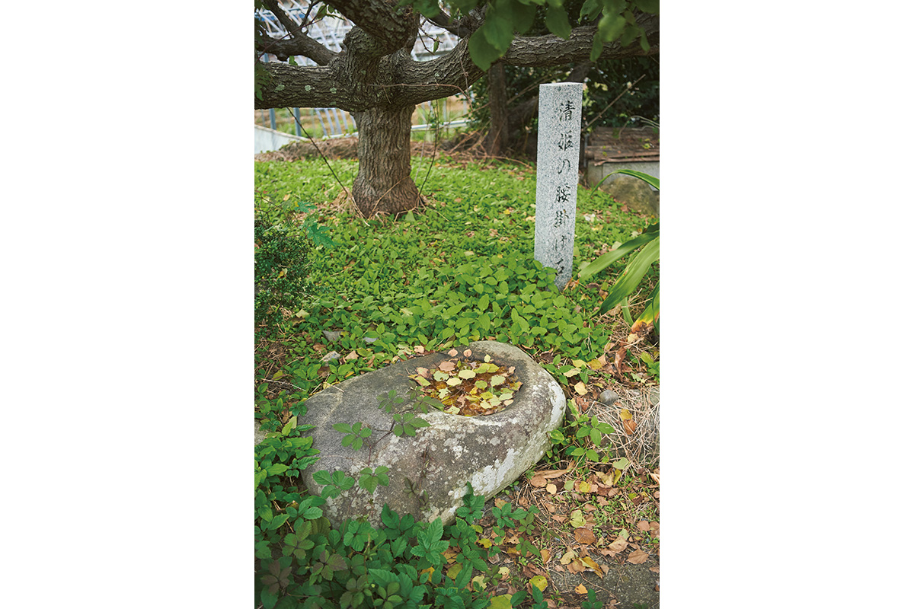
Камень Киёхимэ
- Адрес
- префектура Вакаяма, Гобо, Нада, Уэно, 45 (рядом)
- Цены / Вход
- свободное посещение
- Как добраться
- на машине около 15 минут от съезда Гобо скоростной дороги Ханва; на автобусе «Кумано Гобо Нанкай» линии Инами до остановки «Каминокусуи», затем 5 минут пешком
Курган сандалий
Когда-то здесь росла большая сосна. Киёхимэ забралась на неё, чтобы высмотреть Антина, увидела, как он переправляется через реку Хидака, и сбросила сандалии. Отсюда и название места.
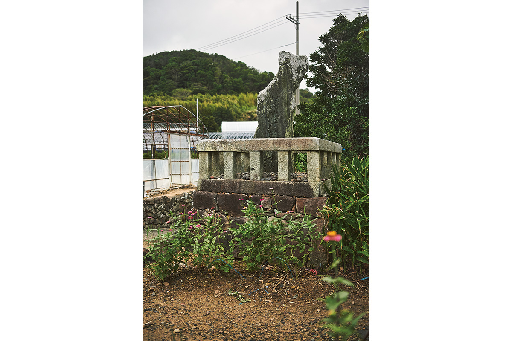
Курган сандалий Киёхимэ
- Адрес
- префектура Вакаяма, Гобо, Нада, Нодзима, 3145 (рядом)
- Цены / Вход
- свободное посещение
- Как добраться
- на машине около 12 минут от съезда Гобо скоростной дороги Ханва; на автобусе «Кумано Гобо Нанкай» линии Инами до остановки «Хараидо», затем около 5 минут пешком
Змеиный курган
В пяти минутах ходьбы от Додзёдзи находится памятный курган Киёхимэ. По легенде, сжёгши Антина в колоколе, она в обличье змеи бросилась здесь в один из притоков реки Хидака.
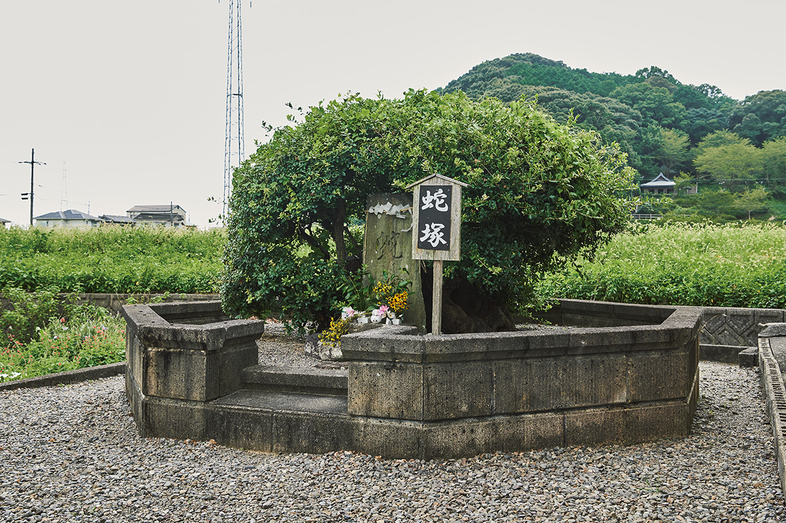
Змеиный курган
- Адрес
- префектура Вакаяма, Гобо, Фудзита, Ёсида, 1119 (рядом)
- Цены / Вход
- свободное посещение
- Как добраться
- от станции Додзёдзи линии JR около 9 минут пешком; на машине около 11 минут от съездов Кавабэ и Гобо скоростной дороги Ханва
Гобо
Старый город при храме
Город Гобо обязан названием храму. С 1595 года здесь строили Хидака-бэцуин, филиал храма Хонгандзи, и местные жители звали его «Гобо-сё» или «Гобо-сама». Вокруг храма вырос храмовый город. С эпохи Эдо здесь селились оптовые торговцы, которые везли товары со всей страны, и их дома стоят до сих пор. Часть из них открыта для посетителей, например бывший дом семьи Накагава, сохранивший облик начала эпохи Сёва. По этим улицам хорошо гулять без цели.
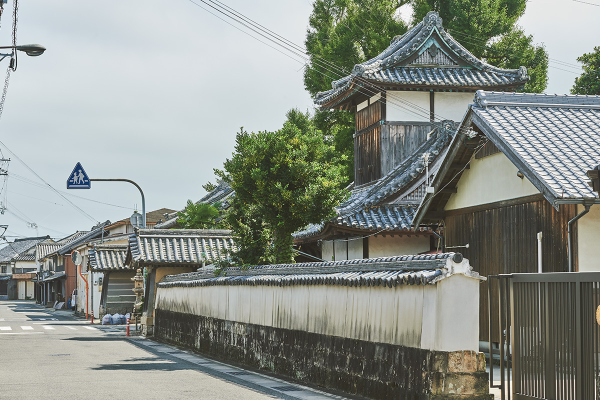
Храмовый город Гобо
- Адрес
- префектура Вакаяма, Гобо, Гобо
- Как добраться
- от станции Ниси-Гобо около 5 минут пешком; на машине около 8 минут от съезда Гобо скоростной дороги Ханва
«Гансо сэти-яки Ямасита»: местная уличная еда
В 1960-х годах кто-то из посетителей попросил основательницу этой закусочной «сэтигоутэ» ему якисобу с яйцом. На местном диалекте «сэтигау» значит «перемешать как попало». Так появилось «сэти-яки»: капусту, мясо и лапшу обжаривают на железной плите, заправляют фирменным соусом, разбивают сверху два яйца и всё вместе перемешивают. Получается горячо, пышно, со знакомым с детства вкусом. Смешанная порция с кальмаром, говядиной, свининой и креветками стоила 850 иен в 2021 году.
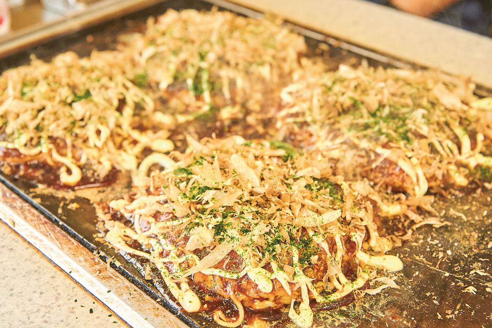
«Гансо сэти-яки Ямасита»
- Адрес
- префектура Вакаяма, Гобо, Югава, Такарабэ, 49-12
- Телефон
- +81 738-22-3227
- Часы работы
- 11:00–15:00 (до окончания продуктов)
- Выходные
- вторник, среда
- Как добраться
- от станции Гобо линии JR около 12 минут пешком; на машине около 8 минут от съезда Гобо скоростной дороги Ханва
«Антин»: сладости в память о монахе
У подножия лестницы Додзёдзи работает сувенирная лавка с рестораном. Её главный товар это «цуриганэ-мандзю», маленькие булочки в форме того самого колокола из легенды: в мягком тесте влажная начинка, и вкусов семь, среди них сладкая бобовая паста, каштан и слива умэ. Здесь же можно собрать набор сладостей со всей префектуры: из мандаринов и персиков, а ещё из китового мяса, мальков сирасу и умэ.
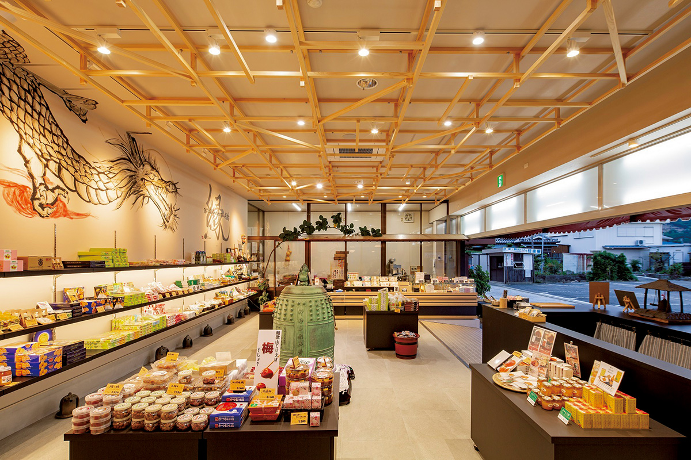
Лавка «Антин»
- Адрес
- префектура Вакаяма, уезд Хидака, Хидакагава, Канэмаки, 1745-3
- Телефон
- +81 738-24-1500
- Часы работы
- 8:00–20:00
- Выходные
- без выходных
- Как добраться
- от станции Додзёдзи линии JR около 5 минут пешком; на машине около 10 минут от съездов Кавабэ и Гобо скоростной дороги Ханва
Фото: Кадзума Такигава.